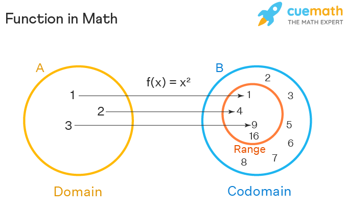

Linear algebra is study of function and expression which has linear relationship with its dependent variable or in simpler words Linear algebra is the study of linear combinations. It is the study of vector spaces, lines and planes, and some mappings that are required to perform the linear transformations. before we dive into linear algebra lets first understand function and equation
Think of function as some kind of machine that takes an input perform some operation and spits out an output for example a coffee grinder machine it take coffee as an input perform some operation(here it might be grinding beans into smaller fine particales) and returning an output(coffee powder)
here it we gave coffee and we got coffee powder now in context of mathematics suppose i have a function
f(x) = 2x
this simple function takes x as an input(which can be thought of a independent variable) performs some operation (multiplying the vairable by 2) and giving the output vairable(which will be called dependent vairable since its value is dependent on x)
if we dive more in the world of mathematics and define function pure mathematically
it would be mappings of one set (set is an ordered pair of things) to another set think of mapping as imposing some sort of plociy for example mapping in the previous example might be that we take a number(x) and return another number (2x)
we use we use function to genralise some event for example we use function force = ma makes our life easier for calculating force (there is a reason why its called formula)function to genralise some event for example we use function force = ma makes our life easier for calculating force (there is a reason why its called formula) based on various enviorments defination of function in context of computer science would some blueprint which lays down the plan on how to use the material (might be how to lay down bricks and stones to build a house) provided (or not provided) to give some output or do some work now lets talk about dimesions
dimesions is the number of vairable in a function mathematically it is number of independent vairable in a function
since we know what is a function lets talk about visulazing a function to visulise a function we have few methods but the we use function to genralise some event for example we use function force = ma makes our life easier for calculating force (there is a reason why its called formula)most used method is called "graph" graph is displaying the relationship between the dependent and independent variable if i have a function f(x) = x + 2 just like we said graph would look like a straight line this line shows that the linear relationship between input and output.vector is one another way of representing points in catersian form(normal graph one) if a point (a,b) was to be expressed in vector form it would be a(i) + b(j) a and be would be the distance of the point from the respective axes in a nutshell vector is something which has magnitude and direction(here the direction would from the origin to the point) and the magnitude is the length of the vector(distance from origin) number of numbers in a vector repsents its dimension in computer science vectors are a fancy word for a list of 1d numbers